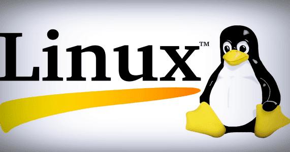

Linux
Links:

1. Debian
Debian is renowned for being a mother to popular Linux distributions such as Deepin, Ubuntu, and Mint which have provided solid performance, stability, and unparalleled user experience. The latest stable release is Debian 10.5, an update of Debian 10 colloquially known as Debian Buster.
Note that Debian 10.5 does not constitute a new version of Debian Buster and is only an update of Buster with the latest updates and added software applications. Also included are security fixes that address pre-existing security issues. If you have your Buster system, there’s no need to discard it. Simply perform a system upgrade using the APT package manager.
The Debian project provides over 59,000 software packages and supports a wide range of PCs with each release encompassing a broader array of system architectures. It strives to strike a balance between cutting edge technology and stability. Debian provides 3 salient development branches: Stable, Testing, and Unstable.
The stable version, as the name suggests is rock-solid, enjoys full security support but unfortunately, does not ship with the very latest software applications. Nevertheless, It is ideal for production servers owing to its stability and reliability and also makes the cut for relatively conservative desktop users who don’t really mind having the very latest software packages. Debian Stable is what you would usually install on your system.
Debian Testing is a rolling release and provides the latest software versions that are yet to be accepted into the stable release. It is a development phase of the next stable Debian release. It’s usually fraught with instability issues and might easily break. Also, it doesn’t get its security patches in a timely fashion. The latest Debian Testing release is Bullseye.
The unstable distro is the active development phase of Debian. It is an experimental distro and acts as a perfect platform for developers who are actively making contributions to the code until it transitions to the ‘Testing’ stage.
Overall, Debian is used by millions of users owing to its package-rich repository and the stability it provides especially in production environments.
2. Gentoo
Gentoo is a distro built for professional use and experts who take into consideration what packages they are working with from the word go. This category includes developers, system & network administrators. As such, it’s not ideal for beginners in Linux. Gentoo comes recommended for those who want to have a deeper understanding of the ins and outs of the Linux operating system.
Gentoo ships with a package management system known as portage which is also native to other distros such as Sabayon, and Calculate Linux which is based on Gentoo and backward-compatible with it. It is Python-based and based on the ports’ collections concept. Port collections are sets of patches and makefiles provided for by BSD-based distros such as OpenBSD and NetBSD.
3. Ubuntu
Created and maintained by Canonical, Ubuntu is one of the most popular Linux distros enjoyed across the globe by beginners, intermediate users, and professionals alike. Ubuntu was specifically designed for beginners in Linux or those transitioning from mac and Windows.
By default, Ubuntu ships with GNOME desktop environment with every day out-of-the-box applications such as Firefox, LibreOffice, and image editing applications such as GIMP, music players, and video players such as Audacious and Rhythmbox.
The latest version is Ubuntu 20.04 LTS codenamed Focal Fossa. It provides numerous improvements and new features such as the new Yaru theme, new look and polished icons, great support for Snap packages, and the fractional scaling functionality that provides support for high-resolution displays.
Ubuntu forms the basis of several other Linux distributions. Some of the distributions based on Ubuntu 20.04 include Lubuntu 20.04 LTS, Kubuntu 20.04, and Linux Mint 20.04 LTS (Ulyana).
Due to its user-friendliness and elegant UI, Ubuntu is ideal for desktop users and newcomers who are trying to wrap their head around Linux. They can readily get started with default Apps as stated earlier on as they work their way towards getting a better understanding of Linux.
It’s worth mentioning Ubuntu Studio which is geared towards multimedia production. It targets creatives who are looking to make a career in graphics, photography, audio, and video production.
4. Linux Mint
Linux Mint is a hugely popular community-driven Linux distro based on Ubuntu. It has transcended time to provide one of the most elegant, and user-friendly distributions loved by desktop users and professionals alike. Despite the controversy surrounding the latest release – Mint 20 – dropping snap support by default, Mint remains a stable, powerful and outstanding Linux distribution.
Based on Ubuntu 20.04 LTS, Mint 20 is available in 3 desktop editions – Cinnamon, XFCE and MATE editions. Mint has dropped support for 32-bit versions and is only available in 64-bit. Under the hood, Linux Mint 20 rides on Linux kernel 5.4 with new enhancements such as improved support for AMD Navi 12, Intel Tiger Lake CPU and NVIDIA GPU. Additionally, the general UI has received a revamp with polished icons, new themes, high-resolution background images and a retouched taskbar.
New features include Warpinator, which is a file-sharing program that works in a LAN and fractional scaling feature for HiDPI displays to enjoy sharper and crisp images. You will also get other applications for everyday use such as Firefox, LibreOffice, Audacious music player, Timeshift, and Thunderbird.
If you want a fast and stable Linux desktop to perform day-to-day desktop tasks, listening to music, watching videos, and even gaming, Mint is the go-to distribution. Mint 20 is a long term release and will receive support until 2025.
5. Red Hat Enterprise Linux
Abbreviated as RHEL, Red Hat Enterprise Linux is a Linux distro designed for Enterprise or commercial purposes. It’s one of the leading open-source alternatives to other proprietary systems such as Microsoft. Red Hat is usually a top choice for server environments given its stability and regular security patches which boost its overall security.
You can readily set it up on physical servers, virtual environments such as VMware, HyperV, and also on the cloud. Red Hat has done a perfect job in containerization technology thanks to OpenShift PaaS (platform as a service), a hybrid cloud environment that is built around Docker containers and managed by Kubernetes.
Redhat trains and certifies system administrators through specialist courses such as RHCSA (Red Hat Certified System Administrators) and RHCE (Red Hat Certified Engineer).
Where efficiency, security, and stability are of utmost priority RHEL is the ideal distro to opt for. RHEL is subscription-based and the subscription is renewed annually. You can purchase a license for an array of subscription models such as Linux Developer Workstation, Linux developer suite, and Linux for Virtual Datacenters.
Traditionally, Red Hat and its derivatives such as CentOS have used yum package manager. Things have changed now and the latest release – RHEL 8 (Ootpa) – now uses DNF as its default package manager. RHEL is distributed using 2 main repositories – AppStream repository and the BaseOS.
The AppStream repository (Application Stream) provides all the software applications that you want to install on your system while the BaseOS provides applications only for the core functionality of the system.
6. CentOS
The CentOS Project is a community-driven free operating system that aims at delivering a robust and reliable open source ecosystem. Based on RHEL, CentOS is a perfect alternative to Red Hat Enterprise Linux since it is free to download and install. It gives users the stability and reliability of RHEL while allowing them to enjoy free security and feature updates. CentOS 8 is a favourite among Linux enthusiasts who want to savour the benefits of RHEL.
The latest version is CentOS 8.2 which is the third iteration of CentOS 8. It relies on App stream and BaseOS repositories and ships with the latest software packages such as Python 3.8, GCC 9.1, Maven 3.6, etc.
7. Fedora
Fedora has enjoyed a reputation for being one of the most user-friendly distros for quite a while now owing to its simplicity and out-of-the-box applications which enable newcomers to easily get started.
It’s a powerful and flexible operating system that’s tailored for desktops & laptops, servers, and even for IoT ecosystems. Fedora, just like CentOS, is based on Red Hat and is in fact, a testing environment for Red Hat before transitioning to the Enterprise phase. As such, it’s usually used for development and learning purposes and comes in handy for developers and students.
Fedora has for a while now used the DNF package manager ( and still uses it as its default package manager) and offers the latest and the very best in RPM software packages. The latest Fedora is Fedora 32.
8. Kali Linux
Developed and maintained by offensive security, Kali Linux is a Debian-based Linux distro designed for penetration testing and conducting digital forensics. It ships with out-of-the-box tools meant for penetration testing such as Nmap, Metasploit Framework, Maltego, and Aircrack-ng to mention a few.
Kali Linux is meant for Cybersecurity experts and students who want to venture into penetration testing. In fact, Kali provides industry-standard certifications such as Penetration Testing with Kali and Kali Linux Certified Professional.
Kali uses the APT package manager and the latest version is Kali 2020.2 and here’s a guide on how to install Kali 2020.2.
9. Arch Linux
Arch Linux is a lightweight and flexible geeky Linux distro designed for advanced users or Linux experts who care much about what is installed and the services running. It gives users the freedom to custom or configures the system, to their preference. In a nutshell, Arch is meant for users who really know the ins and outs of working with Linux.
Arch is a rolling release implying that it is constantly updated to the latest version and all you need is to update the packages on the terminal. It uses Pacman as the default package manager and leverages the AUR (Arch User Repository) which is a community to install software packages and the latest version is 2020.09.01.
10. OpenSUSE
The OpenSUSE project is a modern and comprehensive community project that provides 2 main SUSE branches: SUSE Leap which is a point release that targets desktop users as well as enterprise development and for testing purposes. This makes it a perfect choice for open source developers and System administrators.
On the other hand, it has SUSE Tumbleweed, a rolling release that packs the latest software stacks and IDEs and is the closest you’ll get to a bleeding-edge distro. TumbleWeed is any power user’s or software developer’s piece of cake thanks to the availability of up-to-date packages such as office applications, GCC compiler, and the kernel.
OpenSUSE relies on the Yast package manager for managing software packages and is recommended for developers and system administrators.